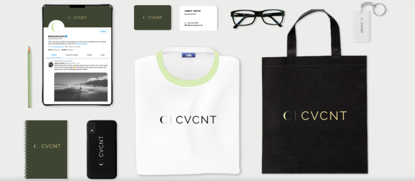

Catálogo
Sobre Nós
CVCNT é uma rede de lojas de roupas e acessórios para o público feminino, masculino e infantil com sede no Brasil. Fundada por Pablo Cavalcante.Inaugurada no ano de 2020, atualmente a rede de lojas conta com 2 sedes, uma localizada na capital São Paulo e outra na região Oeste
Missão, Visão e Valores
Missão.
Inspirar pessoas e levar inovação para todas as pessoas
Visão
Ser uma referência em artigos mantendo assim um vínculo com qualidade de vida e de pessoas.
Valores
Empresa inovadora que proporciona modernidade, atendendo assim a necessidade do público.